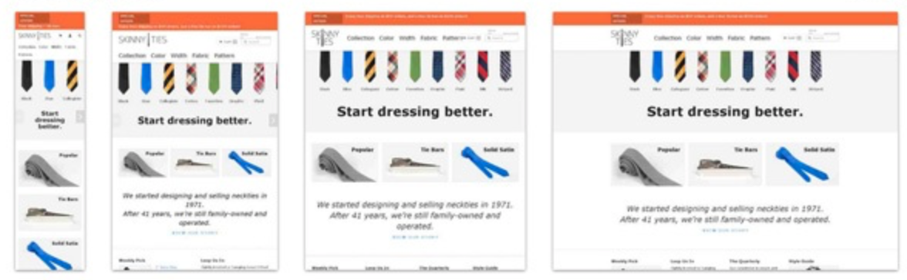

What is a Bootstrap and why is it important?
I personally do like responsive pages because they are very beneficial. In most cases, people do not always have a computer with them so they cannot check the website they are looking for. So it's very useful when mobile devices have the same websites. Responsive web design describes a web design approach that allows websites and pages to displa on all devices and screen sizes by automatically adapting to the screen, whether it’s a desktop, laptop, tablet, or smartphone. Responsive web design works through CSS, using various settings to serve different style properties depending on the screen size, orientation, resolution, color capability, and other characteristics of the user’s device. A few examples of CSS properties related to responsive web design include the viewport and media queries. Responsive pages matter because it relieves web designers, user interface designers, and web developers from working day and night creating websites for every single different device in existence. It also makes the lives of business owners, marketers, and advertisers easier..
Blue. No, yel…
Shut up! Will you shut up?! But you are dressed as one… Camelot! You don’t vote for kings.
We want a shrubbery!!
Look, my liege! Shut up! But you are dressed as one…
- The nose?
- Shh! Knights, I bid you welcome to your new home.. Let us ride to Camelot!
- Look, my liege!
Help, help, I’m being repressed!
Why? Listen. Strange women lying in ponds distributing swords is no basis for a system of government. Supreme executive power derives from a mandate from the masses, not from some farcical aquatic ceremony. Be quiet! A newt?